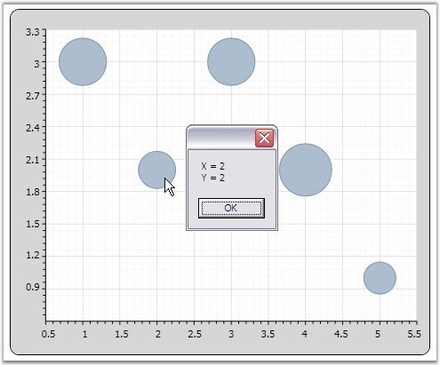

ChartMouseEventArgs are the arguments returned when the mouse events are triggered by ChartSeries. ChartMouseEventArgs returns the segment on which the mouse events are triggered along with default mouse event args. This event args can be used to perform customization of a segment when a mouse event is encountered. The segment returns different values that can be used to perform calculations or operations. The following lines of code demonstrates how ChartMouseEventArgs can be used to retrieve information about the ChartSeries segment.
|
[C#]
series.MouseClick += new ChartMouseEventHandler(series_MouseClick); static void series_MouseClick(object sender, ChartMouseEventArgs e) { ChartPoint point = (ChartPoint)e.Segment.CorrespondingPoints[0].DataPoint; MessageBox.Show("X = " + point.X.ToString() + "\n" + "Y = " + point.Y.ToString()); } |

Figure 256: Displays DataPoint obtained using ChartMouseEventArgs on MouseClick
See Also
Chart Axis Events, Chart MouseEventArgs